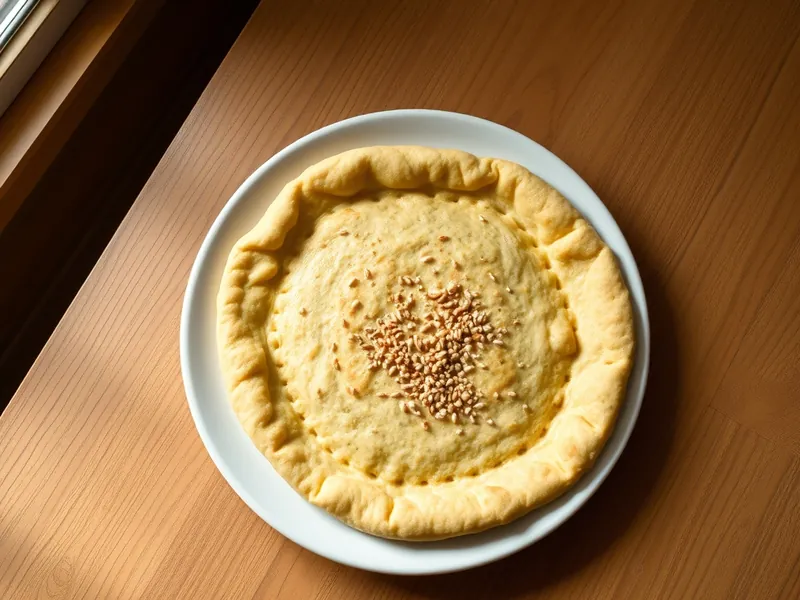

Узбекская лепёшка в духовке
Круглая лепёшка с толстым бортиком и тонкой серединкой, посыпанная кунжутом
120 мин8 порц.268 ккал на порциюБ 8 · Ж 5 · У 46Среднеазиатская кухня
Открыть в приложении: порции, таймеры, список покупок
Продукты на 8 порц.
- Мука пшеничная500 г
- Вода150 мл
- Молоко150 мл
- Дрожжи сухие2 ч. л.
- Сахар1 ч. л.
- Соль1,5 ч. л.
- Растительное масло1 ст. л.
- Яйцо куриное1 шт
- Кунжут1,5 ст. л.
- Зира по желаниюпо вкусу
Как готовить
- Смешайте тёплую воду с молоком, растворите сахар и дрожжи, через 10 минут добавьте соль, масло и муку. Вымесите тугое гладкое тесто 10 минут, накройте и оставьте в тепле на 60 минут.
- Разделите тесто на 2 части, скатайте шары и оставьте под полотенцем на 15 минут. Разогрейте духовку до 200 °C (сильный жар) вместе с противнем.
- Распластайте каждый шар руками в круг 20 см. Сильно прижмите середину пальцами, оставив толстый бортик 2-3 см, и часто наколите серединку вилкой.
- Смажьте лепёшки взбитым яйцом, посыпьте кунжутом, а серединку по желанию зирой.
- Переложите на горячий противень и выпекайте 15-20 минут до румяной корочки.
- Сразу заверните лепёшки в полотенце на 10 минут, чтобы корочка стала мягче.
Совет. Серединку прокалывайте часто и до самого противня, иначе она вздуется пузырём и лепёшка потеряет форму.